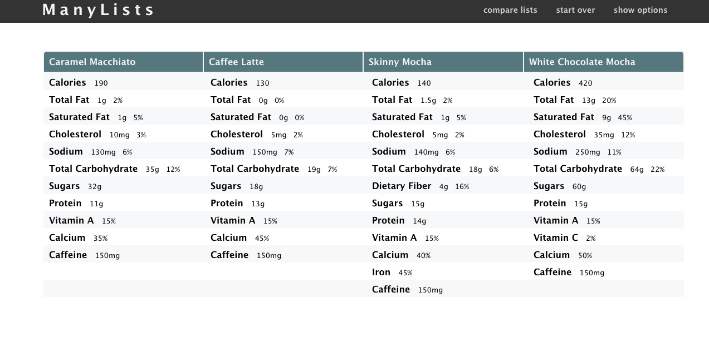
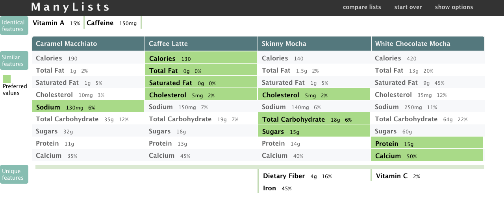

Product Comparison Tool Using Spatial Layouts with Animated Transitions
UX design
UI design
Visualization
Front-end Development
Consumers frequently perform product comparisons to make purchase decisions, but the effort to make such decisions is nontrivial. In effort to solve this problem, the Manylists project was created. My early project Twinlist introduced a unique concept to compare two lists of medications, I adopted the idea, and made a few modification based on the nature of product comparison.
Goal Extend and improve Twinlist and develop a new prototype to allow user to compare up to 4 products and help user make purchase decision.
My role UX design, Front-end Development and Usability Testing
Challenges
Some online shopping websites will provide a static table view for the user to compare products. Although the features are aligned properly for comparison, but the following aspects still make comparison difficult:
It is hard to find similarities and differences.
The list of features are usually very long, requiring substantial scrolling.
There is rarely an indication of which product has the best value for a given feature (e.g. the lowest price, highest potassium or lowest sodium)
Video Demo
This is a 1-minute video showing the features and animations for Manylists.
Details
By simply rearrange the elements positions on the screen, we can get a clear idea of what was similar and what was different.
Before comparison

After comparison

Products usually have long features lists. To demostrate the effectiveness of the design, an example is shown below for four types of cameras.
Usability Testing and Results
I recruited fourteen participants (six female and eight male) from various departments of our university. During the testing session, the participants were asked to click on "compare lists" and describe their understanding of the display. A series of follow up questions are asked to test if user truely understand the visualization. After the test, users were debriefed with a series of survey questions regarding their overall impression and the features they liked/disliked. We also asked participants to make suggestions.
The user study results suggest that the majority of participants
could learn ManyLists’ visual design. They found the
step-by-step animation to be helpful in understanding the
differences between products. Eleven of fourteen of our participants were able to understand the animation and the new spatial layout after playing the animation for just once. Two of them were able to get it after play the animation for the second time and one needed step-by-step explaination.
Finally when we
asked users to rate the overall impression of ManyLists on a
1-9 scale, where 1 is failing and 9 is exemplary, they gave an
average rating of 7.7.
Take away
1. One at a time: In Twinlist, all the identical items are merged together at once. This doesn’t work for ManyLists. The x position for identical items has changed significantly and four items will merge into one (which is harder for user to perceive). In the end, I broke down the animation to merge a single feature at a time and see significant results in the usability studies.
2. Be careful with content movement: In the initial design, the content slid down after the first merge. In early testing we determined the sliding animation complicated the already complex merging process. This was mitigated it by increasing the top padding.
 Usability Testing and Results
Usability Testing and Results